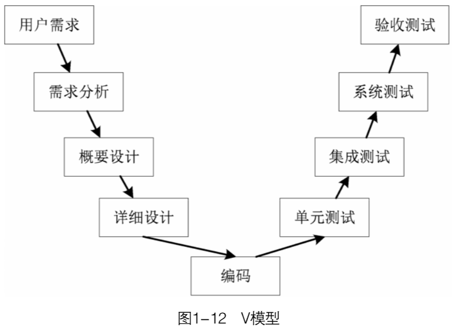

软件测试的背景意义
计算机发展史上几大著名的软件缺陷
1、Ariane 5 Crash
Ariane 5 是一种可以发射航天器的火箭。这种火箭在升空后 40 秒就会发生爆炸，原因是系统软件中的整数溢出漏洞，当在系统中输入一个比软件内置的最大整数还要大的整数时，系统内存将不会存储这个整数数字，由此引起软件崩溃，导弹爆炸。一枚火箭价值 3 亿 7000 万美元。
2、爱国者导弹软件错误
在第一次海湾战争期间，一枚伊拉克导弹击中了美军军营导致 28 死 98 伤，而部署在周围的爱国者导弹系统没有及时对对方的导弹进行拦截，原因是爱国者导弹雷达追踪系统有软件缺陷，没有发现导弹。
3、千年虫
在一些计算机系统中，不能把2000年识别为闰年，即在该计算机系统的日历中没有2000年2月29日这一天，而是直接由2000年2月28日过渡到了2000年3月1日；一些比较老的计算机系统中，在程序中使用了数字串99（或99/99等）来表示文件结束、永久性过期、删除等一些特殊意义的自动操作，这样当1999年9月9日（或1999年4月9日即1999年的第99天）来临时，计算机系统在处理到内容中有日期的文件时，就会遇到99或99/99等数字串，从而将文件误认为已经过期或者将文件删除等错误操作，引发系统混乱甚至崩溃等故障
4、PayPal软件错误
来自宾夕法尼亚的 Chris Reynold 一度成为了世界上最有钱的人，原因是 PayPal 错误的向他的账户里打了 9 亿 2000 万美元。
5、《江南style》打破Youtube观看记录
Youtube 网站使用 32 位有符号的整数来记录视频的观看次数。最初网站设定的视频最大观看次数被《江南style》打破，因此《江南style》的观看此数超过最大值后，变成了负数。之后谷歌将最大值扩大成了 64 位有符号的整数。

6、软件中竞争条件缺陷导致50万人受到停电影响
2003 年 8 月 14 日，一场大规模停电影响到了美国 8 个州和加拿大，总共 50 万人的生活。电脑专家指出是由于软件中的一个竞争条件缺陷导致的，单个操作中的 2 个独立线程使用了同一个代码，由于没有正常同步，2 个线程导致了整个电厂系统瘫痪，最终使 256 个发电厂的发电机停转。当时最大的影响应该是很多无线基站没有信号不能上网，因此很多人将笔记本电脑通过古老的拨号上网方式进行上网。
软件的定义及分类方法
人们通常把各种不同功能的程序，包括系统程序、应用程序、自己编写的程序等称为软件。然而，当计算机的应用日益普及，软件产品日益复杂，软件规模日益增大时，人们意识到软件不仅仅等于程序。
程序是人们为了完成特定的功能而编制的一组指令集，它由计算机语言描述，并且能够在计算机系统上执行。而软件不仅包括程序，还包括程序的处理对象——数据以及程序开发、维护和使用有关的图文资料。
计算机软件是由专业人员开发并长期维护的软件产品，有以下 8 个特点。
- 软件是一种逻辑实体，而不是具体的物理实体，因而它具有抽象性。
- 软件没有明显的制造过程，要提高软件质量，必须在软件开发方面下功夫。
- 软件不会出现机械磨损、老化等问题，但仍需要多次修改与维护。
- 软件的开发与运行受到计算机系统的限制，为了解决这个问题提出了软件移植。
- 软件的开发至今尚未完全摆脱人工的开发方式。
- 软件是复杂的，包括反映问题的复杂性和程序逻辑的复杂性。
- 软件开发需要投入大量成本。
- 软件工作涉及到社会因素。
根据软件规模不同，可以分为微型、小型、中型、大型、超大型软件；
根据软件运行平台不同，可以分为个人计算机软件、嵌入式软件、基于Web的软件等；
根据软件使用范围不同，软件可以分为应用软件和系统软件。
软件概述
软件生命周期
软件生命周期分为多个阶段，每个阶段都有明确的任务，这样就使结构复杂、管理复杂的软件开发变得容易控制和管理。通常，可将软件生命周期划分为6个阶段。
软件开发模型
软件开发模型规定了软件开发应遵循的步骤，是软件开发的“导航图”，它能够清晰、直观地表达软件开发的全过程，以及每个阶段要进行的活动和要完成的任务。开发人员在选择开发模型时，要根据软件的特点、开发人员的参与方式选择稳定、可靠的开发模型。
常见的软件开发模型有：瀑布模型、快速原型模型、迭代模型、螺旋模型、敏捷模型。
**瀑布模型：**瀑布模型采用从上至下一次性完成整个软件产品的开发的方式，该模型将软件开发过程分为6个阶段：计划→需求分析→软件设计→编码→测试→运行维护。
瀑布模型是按照线性方式进行的，无法适应用户的需求变更，用户只能等到最后才能看到开发成果，这增加了开发风险。此外，对于现代软件来说，软件开发各阶段之间的关系大部分不会是线性的，很难使用瀑布模型开发软件，因此瀑布模型不再适合现代软件的开发，已经被逐渐废弃。
**快速原型模型：**快速原型模型在最初确定用户需求时快速构造出一个可以运行的软件原型，用户对该原型进行审核评价，然后给出具体的需求意见，这样逐步丰富、细化需求，最后开发人员与用户达成最终共识，确定用户的真正需求。
快速原型模型的关键在于快速构建软件原型，但准确地设计出软件原型存在一定的难度，此外，这种开发模型也不利于开发人员对产品进行扩展。
**迭代模型：**迭代模型又称为增量模型或演化模型，它将一个完整的软件拆分成不同的组件，然后对每个组件进行开发测试，每测试完一个组件就将结果展现给用户，确定此组件的功能和性能是否满足用户需求，最终确定无误后，将组件集成到软件体系结构中。
迭代模型需要将开发完成的组件集成到软件体系结构中，这样会有集成失败的风险，因此要求软件必须有开放式的体系结构。此外，迭代模型以逐个组件的形式开发、修改，很容易退化为“边做边改”的开发形式，从而失去对软件开发过程的整体控制。
**螺旋模型：**螺旋模型融合了瀑布模型和快速原型模型，它最大的特点是引入了其他模型所忽略的风险分析。如果项目不能排除重大风险，就停止项目从而减小损失，这种模型比较适用于开发复杂的大型软件。
**敏捷模型：**敏捷模型以用户的需求进化为核心，采用迭代、循序渐进的方式进行软件开发。敏捷模型可以及时响应用户的需求变更，不断适应新的趋势，但是在开发灵活的同时也带来了一定程度的混乱，例如，缺乏文档资料，软件旧版本部分功能的重现、回溯较为困难。对于较大的项目，参与开发的人员越多，有效沟通越困难，因此敏捷模型比较适用于小型项目的开发，而不太适用于大型项目的开发。
软件质量概述
软件质量的概念
软件质量是指软件产品满足基本需求和隐式需求的程度。软件产品满足基本需求是指其能满足软件开发时所规定需求的特性，这是软件产品最基本的质量要求，其次是软件产品满足隐式需求的程度，例如，产品界面更美观、用户操作更简单等。
从软件质量的定义可知，为了开发高质量的软件，需要满足以下3个需求，具体如下：
- **满足需求规定：**软件产品符合开发者明确给定的目标，并且能可靠运行。
- **满足用户基本需求：**软件产品的需求是由用户给出的，软件开发最终的目的就是满足用户基本需求，解决用户的实际问题。
- **满足用户隐式需求：**软件产品除了满足用户的基本需求外，如果还能满足用户的隐式需求，将会极大地提升用户满意度，这就意味着软件质量更高。
所谓高质量的软件，除了满足上述需求外，对于内部人员来说，它应该也是易于维护与升级的。软件开发时，统一的符合标准的编码规范、清晰合理的代码注释、形成文档的需求分析、软件设计等资料对于软件后期的维护与升级都有很大的帮助，同时，这些资料也是软件质量的重要体现。
软件质量模型 ⭐
ISO/IEC 9126:1991是一个通用的评价软件质量的国际标准，它不仅对软件质量进行了定义，而且制定了软件测试的规范流程，包括测试计划的撰写、测试用例的设计等。
-
**功能性：**在指定条件下，软件产品满足用户基本需求和隐式需求的能力。
-
**可靠性：**在指定条件下使用时，软件产品维持规定的性能级别的能力。
-
**可使用性：**在指定条件下，软件产品被使用、理解、学习的能力。
-
**效率：**在指定条件下，相对于所有资源的数量，软件产品可提供适当性能的能力。
-
**可维护性：**指软件产品被修改的能力，修改包括修正、优化和功能规格变更的说明。
-
**可移植性：**指软件产品从一个环境迁移到另一个环境的能力。
例：以微信为例，验证微信的软件质量。
影响软件质量的因素
由于软件自身的特点和目前的软件开发模式存在不足，隐藏在软件内部的质量缺陷无法完全被根除，所以每一款软件都会存在一些质量问题。影响软件质量的因素有很多，常见的有：需求模糊、软件开发缺乏规范性文件的指导、软件开发人员变化、缺乏软件质量的管控等。
软件缺陷管理
软件缺陷产生的原因
软件缺陷就是通常所说的 bug，它是指软件中存在的影响软件正常运行的问题。从产品内部看，缺陷是产品开发或维护过程中存在的错误、问题等；从产品外部看，缺陷是系统运行过程中某种功能的失效。
软件缺陷产生的原因主要有：需求不明确、软件结构复杂、编码问题、项目期限短、使用新技术等。
软件缺陷的分类
软件缺陷有很多，从不同的角度可以将软件缺陷划分为不同的种类，具体划分如下：
- 按照测试种类，可以将软件缺陷划分为界面缺陷、功能缺陷、性能缺陷、安全性缺陷、兼容性缺陷等。
- 按照缺陷的严重程度，可以将软件缺陷划分为严重缺陷、一般缺陷、次要缺陷、建议缺陷。
- 按照缺陷的优先级不同，可以将软件缺陷划分为立即解决缺陷、高优先级缺陷、正常排队缺陷、低优先级缺陷。
- 按照缺陷的发生阶段不同，可以将软件缺陷划分为需求阶段缺陷、架构阶段缺陷、设计阶段缺陷、编码阶段缺陷、测试阶段缺陷。
软件缺陷的处理流程
（1）提交：测试人员发现缺陷之后，将缺陷提交给测试组长。
（2）分配：测试组长接收到测试人员提交的缺陷之后，将其移交给开发人员。
（3）确认：开发人员接收到移交的缺陷之后，会与团队甚至测试人员一起商议，确定其是否是一个缺陷。
（4）拒绝/延期：如果经过商议之后，发现其不是一个真正的缺陷，则拒绝处理此缺陷，对其进行关闭处理。如果经过商议之后，确定其是一个真正的缺陷，则可以根据缺陷的严重程度或优先级等立即处理或延期处理。
（5）处理：开发人员修改缺陷。
（6）复测：开发人员修改好缺陷之后，测试人员重新进行测试（复测)，检测缺陷是否已经修改。如果未被正确修改，则重新提交缺陷。
（7）关闭：测试人员重新测试之后，如果缺陷已经被正确修改，则将缺陷关闭，整个缺陷处理完成。
软件缺陷报告
在实际软件测试过程中，测试人员在提交软件测试时都会按照公司规定的模板将缺陷的详细情况记录下来并生成软件缺陷报告。每个公司的软件缺陷报告模板通常并不相同，但一般都会包括缺陷的ID、类型、严重程度、优先级，以及测试环境等，有时还会有测试人员的建议。
软件测试概述
软件测试简介
软件测试是使用人工或自动手段运行或测定某个系统的过程，其目的在于检验它是否满足规定的需求或是弄清楚预期结果与实际结果之间的差异。
敏捷模型促使人们对软件测试重新进行了思考，更多的人倾向于软件开发与软件测试的融合，即不再是在软件完成之后再进行测试，而从软件需求分析阶段，测试人员就参与其中，了解整个软件的需求、设计等。
软件开发与软件测试融合后，虽然两者的界限变得模糊，但软件开发与软件测试的工作效率都得到了极大的提高，这种工作模式至今依然盛行。
软件测试的目的
- 从软件开发角度来说，软件测试通过找到的缺陷帮助开发人员找到开发过程中存在的问题，包括软件开发的模式、工具、技术等方面存在的问题，从而预防缺陷的产生。
- 从软件测试角度来说，主要目的是使用最少的人力、物力、时间等找到软件中隐藏的缺陷，保证软件的质量，也为以后的软件测试积累丰富的经验。
- 从用户需求角度来说，软件测试能够检验软件是否符合用户需求，对软件质量进行评估和度量，可为用户评审软件提供有力的依据。
软件测试的分类
按测试阶段分类 ⭐
| 测试阶段 | 说明 |
|---|---|
| 单元测试 | 验证软件单元是否符合用户需求与设计需求。单元测试大多是开发人员进行的自测。 |
| 冒烟测试 | 对新构建版本软件进行的最基本的测试。 如果测试未通过，需要返回给开发人员进行修正；如果测试通过则再进行其他测试。 |
| 集成测试 | 将已经测试过的软件单元组合在一起并测试它们之间的接口，验证软件是否满足设计需求。 |
| 系统测试 | 系统测试将经过测试的软件放在实际环境中运行，并将其与其他系统的成分 （如数据库、硬件和操作人员等）组合在一起进行测试。 |
| 验收测试 | 逐行逐字地按照说明书的描述对软件产品进行测试，确保其符合用户的各项要求。 |
按是否需要查看代码分类 ⭐
| 测试技术 | 说明 |
|---|---|
| 黑盒测试 | 黑盒测试又叫功能测试、数据驱动测试、基于需求规格说明书的功能测试， 它把软件当作一个有输入与输出的“黑匣子”，只要输入的数据能输出预期的结果 即可，不必关心软件内部是怎样实现的，注重于测试软件的功能性需求。 |
| 白盒测试 | 白盒测试又叫透明盒测试、结构测试、逻辑驱动测试或基于代码的测试， 它是指测试人员了解软件程序的逻辑结构、路径和运行过程， 在测试时，按照程序的执行路径得出结果。 白盒测试把软件（程序）当作一个透明的“盒子”， 测试人员清楚地知道从输入到输出的每一步过程。 |
| 灰盒测试 | 灰盒测试是介于黑盒测试与白盒测试之间的一种软件测试方法， 它由方法和工具组成，这些方法和工具取决于应用程序内部交互的环境。 灰盒测试通常用于集成测试阶段，测试人员在使用灰盒测试方法时， 不仅需要关注输入、输出的正确性，而且需要关注程序内部的情况， 通常根据—些现象、事件、标志来判断内部的运行状态。 |
相对于黑盒测试来说，白盒测试对测试人员的要求会更高一点，它要求测试人员具有一定的编程能力，而且要熟悉各种脚本语言。
但是在企业中，黑盒测试与白盒测试并不是界限分明的，在测试一款软件时往往将黑盒测试与白盒测试相结合对软件进行完整、全面的测试。
灰盒测试虽然没有白盒测试详细、完整，但是比黑盒测试更关注程序的内部逻辑，能够用于黑盒测试以提高测试的效率。
按软件质量特性分类
| 软件质量特性 | 说明 |
|---|---|
| 功能测试 | 测试软件的准确性、易用性、适合性、互操作性等是否满足用户的需求。 |
| 性能测试 | 测试软件的是否满足用户的需求，包括负载测试、压力测试、兼容性测试、 可移植性测试和健壮性测试等。 |
按自动化程度分类
| 自动化程度 | 说明 |
|---|---|
| 人工测试 | 人工测试是测试人员编写与执行测试用例的过程。人工测试比较耗时、费力， 而且测试人员如果在疲惫状态下，很难保证测试的效果。 |
| 自动化测试 | 借助脚本、自动化测试工具等完成相应的测试工作，它也需要人工的参与， 但是它可以将要执行的测试代码或流程写成脚本，通过执行脚本完成整个测试工作。 |
按测试项目分类
| 测试项目 | 说明 |
|---|---|
| 界面测试 | 验证软件界面是否符合用户需求，包括界面布局是否美观、按钮是否齐全等。 |
| 文档测试 | 文档测试以需求分析说明书、软件设计文档、用户手册、安装手册为主， 主要验证文档说明与实际软件情况之间是否存在差异。 |
| 安全性测试 | 测试软件在受到没有授权的内部或外部用户的攻击或恶意破坏时如何进行处理， 是否能保证软件与数据的安全。 |
| 功能测试 | / |
| 性能测试 | / |
其他分类
| 其他分类 | 说明 |
|---|---|
| α测试 | α测试是指对软件最初版本进行测试。软件最初版本一般不对外发布， 在上线之前，由开发人员和测试人员或者用户协助进行测试。 测试人员记录软件最初版本在使用过程中出现的错误和问题，整个测试过程是可控的。 |
| β测试 | β测试是指对上线之后的软件版本进行测试，此时软件已上线发布， 但发布的版本中可能会存在较小的bug， 由用户在使用过程中发现错误和问题并进行记录，然后反馈给开发人员进行修复。 |
| 回归测试 | 当测试人员发现缺陷以后，会将缺陷提交给开发人员，开发人员对程序进行修改； 修改之后，测试人员会对修改后的程序重新进行测试， 确认原有的缺陷已经消除并且没有引入新的缺陷， 这个重新测试的过程称为回归测试。 回归测试是软件测试工作中非常重要的一部分，软件开发的各个阶段都会进行多次回归测试。 |
| 随机测试 | 随机测试是没有测试用例、检查列表、脚本或指令的测试， 它主要根据测试人员的经验对软件进行功能和性能抽查。 随机测试是根据测试用例说明书执行测试用例的重要补充手段， 是保证测试覆盖完整性的有效方式。 |
按照软件开发版本周期进行划分，可以将软件测试分为预览版本Pre-α测试、内部测试版本α测试、公测版本β测试、候选版本Release测试。在这些测试完成之后产品就可以正式上线发布了。
练习
-
张三开发实现完成注册功能，针对自己开发的该功能代码进行测试属于（ A ）
-
A. 单元测试
-
B. 集成测试
-
C. 系统测试
-
D. 验收测试
-
-
项目相关开发人员完成了全部系统的核心业务实现，最最后提交给测试全面测试，属于（ C ）
-
A. 单元测试
-
B. 集成测试
-
C. 系统测试
-
D. 验收测试
-
-
从注册、登录、下单联动一起的测试属于（ B ）
-
A. 单元测试
-
B. 集成测试
-
C. 系统测试
-
D. 验收测试
-
-
整个电商系统测试通过后，最后交付给用户正式使用，一般需要完成（ D ）
-
A. 单元测试
-
B. 集成测试
-
C. 系统测试
-
D. 验收测试
-
-
登录界面输入账号、密码、验证码，点击登录测试属于（ A ）
-
A. 黑盒测试
-
B. 灰盒测试
-
C. 白盒测试
-
-
无界面，通过工具/代码实现登录功能测试属于（ B ）
-
A. 黑盒测试
-
B. 灰盒测试
-
C. 白盒测试
-
-
无界面，直接对开发实现的登录功能的源代码进行测试属于（ C ）
-
A. 盒测试
-
B. 盒测试
-
C. 盒测试
-
软件测试的目的和原则 ⭐
软件测试的目的
软件测试的目的是发现软件中存在的缺陷和系统不足，定义系统的能力和局限性，提供组件、工作产品和系统的质量信息；提供预防和减少可能错误的信息，在过程中尽早检测错误以防止错误传递到下一阶段，提前确认问题和识别风险；最终获取系统在可接受风险范围内的可用信息，确认系统在非正常情况下的功能和性能，保证一个产品是完整的，并且是可用的或者可被集成的。
软件测试的原则
1．测试应基于用户需求
所有的测试工作都应该建立在满足用户需求的基础上。从用户角度来看，最严重的错误就是软件无法满足需求。有时候，软件产品的测试结果非常完美，但不是用户最终想要的产品，那么软件产品的开发就是失败的，而测试工作也是没有任何意义的。因此测试应依照用户的需求配置环境并且按照用户的使用习惯进行，以及给出评价结果。
2．测试要尽早进行
软件的错误存在于软件生命周期的各个阶段，因此应该尽早开展测试工作，把软件测试贯穿到软件生命周期的各个阶段中，这样测试人员能够尽早地发现和预防错误，降低错误修复的成本。尽早地开展测试工作有利于帮助测试人员了解软件产品的需求和设计，从而预测测试的难度和风险，制定出完善的计划和方案，提高测试的效率。
3．不能做到穷尽测试
由于时间和资源的限制，进行完全（各种输入和输出的全部组合）的测试是几乎不可能的，测试人员可以根据测试的风险和优先级等确定测试的关注点，从而控制测试的工作量,在测试成本、风险和收益之间求得平衡。
4．遵循 GoodEnough 原则
GoodEnough 原则是指测试的投入与产出要适当平衡，形成充分的质量评估过程，这个过程建立在测试付出的代价之上。测试不充分无法保证软件产品的质量，但测试投入过多会造成资源的浪费。随着测试资源投入的增加，测试的产出也是增加的，但当投入达到一定的比例后，测试的效果就不会明显增强了。因此在测试时要根据实际要求和产品质量考虑测试的投入，最好使测试的投入与产出达到一个足够好的状态。
5．测试缺陷要符合“二八”定理
缺陷的“二八”定理也称为 Pareto 原则、缺陷集群效应。一般情况下，软件中80%的缺陷会集中在20%的模块中，缺陷并不是均匀分布的。因此在测试时，要抓住主要矛盾，如果发现某些模块比其他模块具有更多的缺陷，则要投入更多的人力、精力重点测试这些模块以提高测试效率。
6．避免缺陷免疫
我们都知道虫子的抗药性原理，即一种药物使用久了，虫子就会产生抗药性，而在软件测试中，缺陷也是会产生免疫性的。同样的测试用例被反复使用，其发现缺陷的能力就会越来越差；测试人员对软件越熟悉越会忽略一些看起来比较小的问题，发现缺陷的能力也越差，这种现象被称为软件测试的“杀虫剂”现象。它的产生主要是由于测试人员没有及时更新测试用例或者是对测试用例和测试对象过于熟悉形成了思维定势。
要想应对这种情况，就要不断对测试用例进行修改和评审，不断增加新的测试用例。同时，测试人员也要发散思维，不能只是为了完成测试任务而做一些输入、输出的对比。
没有缺陷的软件是不存在的，软件测试是为了找出软件中的缺陷，而不是为了证明软件没有缺陷。
① 不可能进行完全测试
② 测试中有风险存在
③ 软件测试中只能证明缺陷存在，不能证明产品已经没有缺陷
④ 软件产品中所存在的缺陷数与已发现的缺陷数成正比
⑤ 要避免软件测试的杀虫剂现象
⑥ 及早地和不断地进行软件测试
⑦ 进行回归测试
⑧ 软件测试应该有计划、有组织地进行
软件测试与软件开发
软件测试与软件开发的关系
软件测试贯穿软件项目的整个过程，但它的实施过程与软件开发的并不相同。
软件开发是自顶向下、逐步细化的过程，除此之外，软件开发中的计划阶段的任务是定义软件作用域，软件需求分析阶段的任务是确定软件信息域、功能和性能需求等，软件设计阶段的任务是选定编程语言、设计模块接口等。
软件测试与软件开发的实施过程相反，它是自底向上、逐步集成的过程。首先进行单元测试，排除模块内部逻辑与功能上的缺陷，然后按照软件设计将模块集成并进行集成测试,检测子系统或系统结构上的错误，最后运行完整的系统，进行系统测试，检验其是否满足用户需求。
常见的软件测试模型
V模型
V模型在瀑布模型的基础上进行了改变，在瀑布模型的后半部分添加了测试工作。
V模型应用瀑布模型的思想将复杂的测试工作分成了目标明确的小阶段来完成，具有阶段性、顺序性和依赖性，它既包含对源代码的底层测试也包含对软件需求的高层测试。
但是V模型也有一定的局限性，它只有在编码之后才能开始测试，早期的需求分析等前期工作没有涵盖其中，因此它不能发现需求分析等早期阶段的错误，这为后期的系统测试、验收测试埋下了隐患。
W模型
W模型是由V模型演变而来的，它强调测试应伴随着整个软件生命周期。其实W模型是一个双V模型，软件开发是一个V模型，而软件测试是与软件开发同步进行的另一个V模型。
W模型的测试范围不仅包括程序，而且包括需求分析、概要设计、详细设计等前期工作，这样有利于尽早、全面地发现问题。
但是W模型也有自己的局限性，它将软件开发过程分成需求分析、设计、编码、集成等一系列的串行活动，无法支持迭代、自发性等需要变更调整的项目。
H模型
H模型将测试活动完全独立出来，形成一个完全独立的流程，这个流程将测试准备活动和测试执行活动清晰地体现出来。测试流程和其他工作流程是并发执行的，只要某一个工作流程的条件成熟就可以开始进行测试。
X模型
X模型的设计原理是将程序分成多个片段反复迭代测试，然后将多个片段集成再进行迭代测试。

X模型左边描述的是针对单独程序片段进行的相互分离的编码和测试，多个程序片段进行频繁的交接，在X模型的右上部分，将多个片段集成为一个可执行的程序再进行测试。通过集成测试的产品可以进行更大规模的集成，也可以进行封装提交给用户。
在X模型的右下部分还设置了探索性测试，它能够帮助有经验的测试人员发现更多测试计划之外的软件缺陷,但这对测试人员的要求会高一些。
软件测试的基本流程
软件测试的流程
分析测试需求
测试人员一般会根据软件开发需求文档制作一个需求规格说明书检查列表，按照各个检查项对用户需求进行分析、校验。
制定测试计划
- **确定测试范围险：**明确哪些对象是需要测试的，哪些对象是不需要测试的。
- **制定测试策略险：**测试策略是测试计划中最重要的部分，它将要测试的内容划分出不同的优先级，以确定测试重点，并根据测试模块的特点和测试类型（如功能测试、性能测试）选定测试环境和测试方法（如人工测试、自动化测试）。
- 安排测试资源险：通过考虑测试难度、时间、工作量等因素，对测试资源进行合理安排，包括人员分配、工具配置等。
- 安排测试进度险：根据软件开发计划、产品的整体计划来安排测试工作的进度，同时还要考虑各部分工作的变化。在安排测试进度时，最好在各项测试工作之间预留一个缓冲时间以应对计划变更。
- 预估测试风险：罗列出测试工作过程中可能会出现的不确定因素，并制定应对策略。
设计测试用例 ⭐
测试用例编写的原则是尽量用最少的测试用例达到最大的测试覆盖率。测试用例常用的设计方法包括等价类划分法、边界值分析法、因果图法与决策表法、正交实验设计法、逻辑覆盖法等。
测试用例的编写一般包含以下几个分类：
1.用例编号： 项目+模块+数字
2.用例标题： 预期执行结果(测试点)
3.所属模块： 模块名
4.优先级： 用例的重要程度(高P0~P3低)
5.前置条件： 执行操作步骤的前置条件 1、账号已注册 2、已打开登录页面
6.测试步骤： 测试点执行的关键步骤 1、输入账号 2、输入密码 3、点击登录按钮
7.测试数据： 输入数据
8.预期结果： 预期执行结果及隐性结果
执行测试
根据测试用例的优先级执行测试，当提交后的缺陷被开发人员修改之后，测试人员还需要进行回归测试。
编写测试报告
测试报告是对一个测试活动的总结,包括对项目测试过程进行归纳、对测试数据进行统计、对项目的测试质量进行客观评价。测试报告通常包括引言、测试概要、测试内容及执行情况、缺陷统计与分析、测试结论与分析等。
实例:微信朋友圈功能的测试流程
微信朋友圈功能的测试流程主要包括6个，分别是开始、注册/登录、发布朋友圈、查看朋友圈、点赞/评论朋友圈、结束。本次主要对发布朋友圈功能进行测试。
分析测试需求： 发布的朋友圈内容主要有5种形式，分别是文字、照片、视频、文字+照片、文字+视频，假设5种朋友圈内容的要求为文字1-500字、照片1-9张、视频1-15秒。
制定测试计划：

设计测试用例：
**执行测试：**执行测试用例，对测试过程进行记录和跟踪。将测试发现的缺陷整理成缺陷报告。
编写测试报告：
一、引言
- 目的
- 术语解释
- 参考资料
二、测试概要
- 项目简介
- 测试环境
- 测试时间、地点及人员
- 回归测试
三、测试内容及执行情况
- 测试目标
- 测试范围
- 测试用例使用情况
四、缺陷统计与分析
- 缺陷数目与类型
- 缺陷的解决情况
- 缺陷的趋势分析
五、测试分析
- 测试覆盖率分析
- 需求符合度分析
- 功能正确性分析
- 产品质量分析
- 测试局限性
六、测试总结
- 遗留问题
- 测试经验总结
七、附件
- 测试用例清单
- 缺陷清单
- 交付的测试工作产品
- 遗留问题报告
本章习题
填空题
-
软件从 “出生” 到 “消亡” 的过程称为（ 软件生命周期 ） 。
-
引入风险分析的开发模型为（ 螺旋模型 ）模型。
-
ISO/IEC 9126:1991标准提出的质量模型包括（ 功能性 ）、可靠性、（ 可使用性 ）、效率、可维护性、（ 可移植性 ）六大特性。
-
按照缺陷的严重程度可以将缺陷划分为（ 严重缺陷 ）、一般缺陷、次要缺陷、（ 建议缺陷 ）。
-
验证软件单元是否符合软件需求与设计的测试称为（ 单元测试 ）。
-
对程序的逻辑结构、路径与运行过程进行的测试称为（ 白盒测试 ）。
-
有一种测试模型，测试与开发并行进行，这种测试模型称为（ H ）模型。
判断题
-
软件存在缺陷是由于开发人员水平有限引起的，优秀的开发人员可以开发出零缺陷的软件。（ × ）
-
软件缺陷都存在于程序代码中。（ × ）
-
软件测试是为了证明程序无错。（ × ）
-
软件测试要投入尽可能多的精力以达到100%的覆盖率。（ × ）
单选题
-
下列选项中，不属于软件开发模型的是（ A ）
-
A. V模型
-
B. 快速原型模型
-
C. 螺旋模型
-
D. 敏捷模型
-
-
下列选项中，哪一项不是影响软件质量的因素（ C ）
-
A．需求模糊
-
B. 缺乏规范的文档指导
-
C. 软件测试要求太严格
-
D. 开发人员技术有限
-
-
下列哪一项不是软件缺陷产生的原因（ B ）
-
A. 需求不明确
-
B. 测试用例设计不好
-
C. 软件结构复杂
-
D. 项目周期短
-
-
下列选项中，关于软件缺陷的说法错误的是（ C ）
-
A. 软件缺陷是软件（包括程序和文档）中存在的影响软件正常运行的问题、错误、隐藏的功能缺失或多余
-
B. 按照缺陷的优先级不同可以将缺陷划分为立即解决缺陷、高优先级缺陷、正常排队缺陷、低优先级缺陷
-
C. 缺陷报告有统一的模板，该模板是根据IEEE729-1983标准制定的
-
D. 每个缺陷都有一个唯一的编号，这是缺陷的标识
-
-
下列选项中，关于软件测试的说法错误的是（ D ）
-
A. 在早期的软件开发中，测试就等同于调试
-
B. 软件测试是使用人工或自动手段来运行或测定某个系统的过程
-
C. 软件测试的目的在于检验软件是否满足规定的需求或弄清楚预期结果与实际结果之间的差异
-
D. 软件测试与软件开发是两个独立、分离的过程
-
-
下列选项中，不属于软件测试原则的是（ B ）
-
A. 测试应基于用户需求
-
B. 测试越晚进行越好
-
C. 穷尽测试是不可以的
-
D. 软件测试遵循 GoodEnough 原则
-